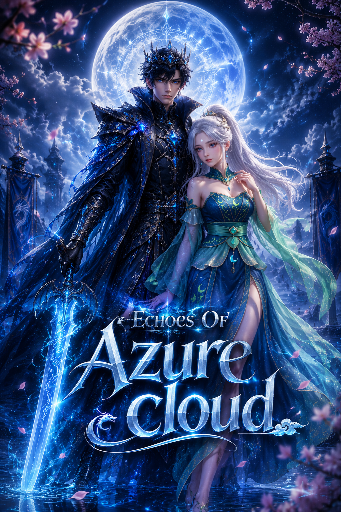

Overview
Echoes of Azure Cloud is a cultivation manhwa-style novelepic spanning two realms: the Light Realm (weaker cultivators) and the Sovereign Realm (celestial cultivators). It traces Xiao Lin's rise from the weakest sect to Sovereign god(EMPOROER OF GODS), his love with Lin Er, the reclaiming of the Azure Cloud legacy, and the restoration of balance across realms..
Structure5 major arcs, 152 chapters/episodes. Novel-style narrative with progression, duels, tournaments, secret realms and god-tier battles.
Core ThemesLegacy & inheritance Proving one’s worth through trials Love, sacrifice and partnership Balance between mortal and divine realms